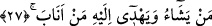

Molla Câmî de der ki:
Câhil insan dünyanın mansıbına devlet lâkabını verir
Çocuğun elini ayağını şişmiş görür, semiz ve şişman zanneder
27. İnkâr edenler diyorlar ki: “Ona Rabbinden bir mûcize indirilmeli değil
miydi?” De ki: “Şüphesiz Allah dilediğini saptırır, kendisine yöneleni de hidâyete
erdirir.”
“İnkâr edenler” inatlarını ve küfürlerini ısrarla sürdüren Mekke kâfirleri “diyorlar
ki: “Ona” ‘Muhammed’e “Rabbinden” doğruluğuna dâir bir alâmet ve delil olarak
Mûsâ ve Îsâ’ya (a.s.) verilen asâ, ölü diriltme ve benzeri âyetler gibi “bir mûcize
indirilmeli değil miydi?”
“De ki: “Şüphesiz Allah” gerçek âşikâr olup mûcizeler ortaya çıktığı halde hâlâ
mûcize istemeleri yüzünden saptırmayı “dilediğini saptırır,” ve O hidâyet etmedikten
sonra mûcizelerin çokluğunun hiçbir faydası olmaz. O, “kendisine yöneleni” inadını
bırakıp hakka yöneleni “de hidâyete erdirir.”
el-Kamûs’ta der ki: “
” Allah’a döndü, tevbe etti, mânâsındadır.
“
(saptırma)” kulda sapma fiilini yaratmak, hidâyet etme ise hidâyete erme fiilini
yaratmak ve ne olursa olsun istenen bir şeye ulaştıran yola kılavuzluk etmek demektir.
Her iki kelime de Allah’tan başkasına sebep olması yoluyla isnâd edilebilir. Kur’an her
iki mânâyı da ifade etmiştir. Saptırma fiili şerîat mertebesinde şeytana, tarikat
mertebesinde nefse ve hakîkat mertebesinde ise Allah’a isnad edilir.
28. Onlar, îman eden ve Allah’ı anmakla kalbleri huzur bulan kimselerdir. İyi bilin
ki, kalbler ancak Allah’ı anmakla huzur bulur.
“Onlar, îman eden ve Allah’ı anmakla kalbleri huzur bulan” Allah’ın anıldığını
duydukları zaman onu seven ve ona ünsiyet eden “kimselerdir.”
Buradaki zikir (Allah’ı anmak), Kur’ân’ı da içine alır. O zaman Kur’ân’a ve ism-i
azam olan ‘Allah’ zikrine ancak mü’minler ünsiyet eder ve onu dinlemekten hoşlanırlar.
Kâfirler ise dünya ile sevinirler Allah’tan başka şeyler anıldığı zaman yüzleri güler.
Nitekim Allah Teâlâ şöyle buyurmuştur: “Allah tek olarak anıldığı zaman, âhirete